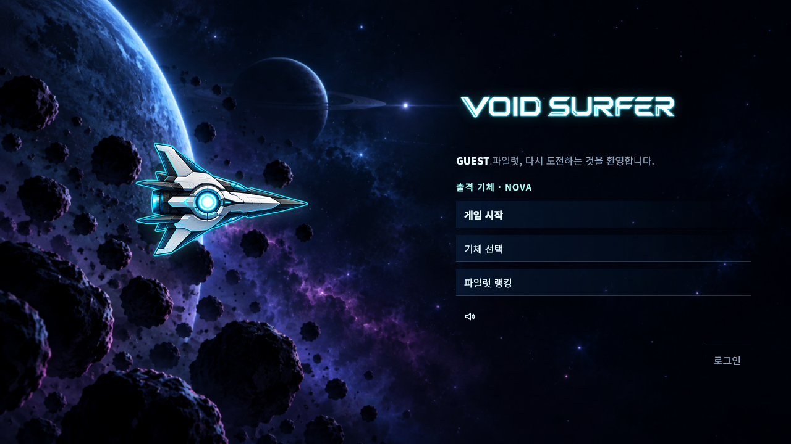
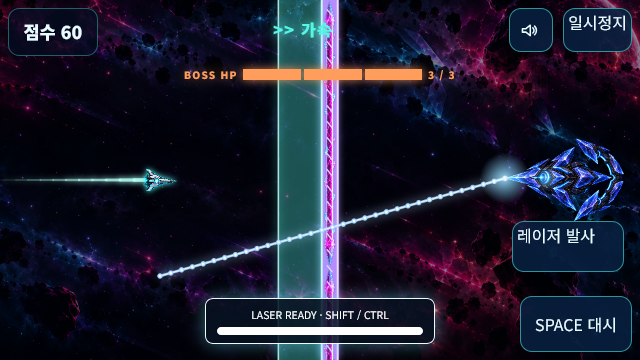
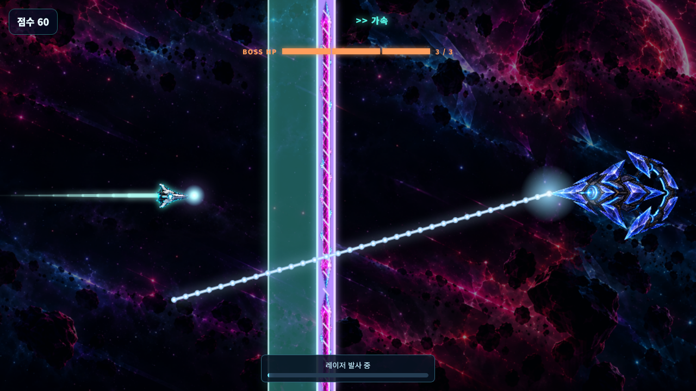
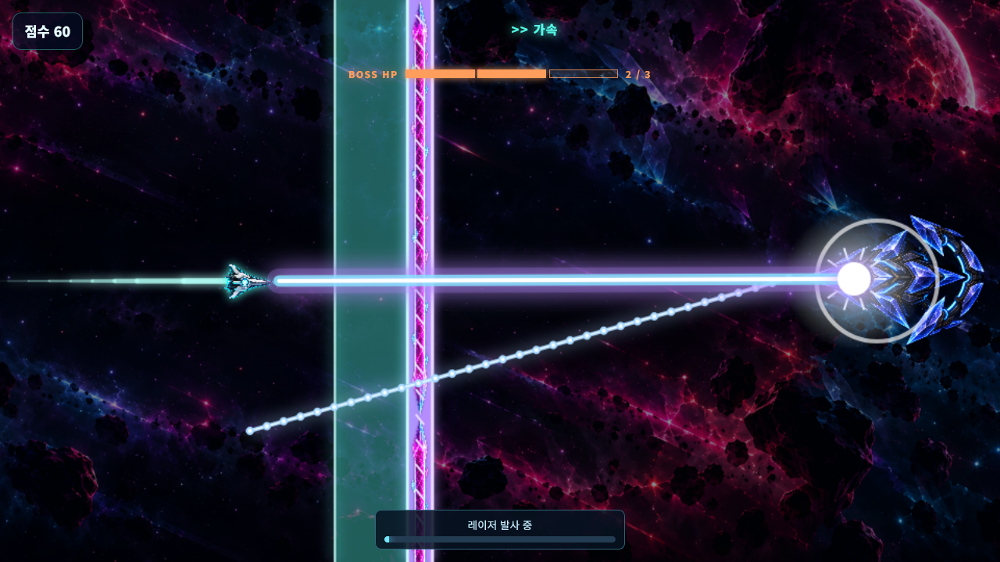

VOID SURFER · 실제 렌더러 적용 결과
프로덕션 렌더러·HUD·스타일과 실제 엔진 상태를 사용했습니다. 캡처를 위한 중력 0·충돌 무적 설정이며, 실제 난이도 플레이 평가는 별도입니다.
메인 메뉴 · ORBIT RUN

가로 모바일 · 별도 발사 버튼

0.2초 충전 → 보스 명중


영상은 정상 0.5초 → 효과 5초 → 정상 복귀로 구성됩니다. 영상에는 캔버스 장면이, 위 스크린샷에는 실제 HUD도 포함되어 있습니다.